Hud at monday.com
Function-level observability — proving the value across our stack.
Why We Adopted Hud
What our existing tools (Datadog, Coralogix, MCPs) don't cover.
What we already have
- Service-level metrics, logs, and traces
- Alerting and dashboards
- MCP access to query observability data
The gap Hud fills
- Function-level depth — latency, CPU per function
- Code-connected — IDE + MCP linked to code & git
- Forensics — auto-traces on errors/spikes
- Unfamiliar service? — Hud MCP gives you the full story
Adding Function-Level Depth
On top of our existing stack — not replacing it.
| Current stack (DD / Coralogix) | What Hud adds |
|---|---|
| Alert fires → check dashboards | Alert includes function-level root cause |
| Query logs via MCP, correlate manually | Forensics captured automatically on the spot |
| Traces available (sampled, expensive) | Smart sampling — deep insight, low cost |
| Service-level visibility | Function-level — see inside the service |
MCP connected to code + production — ask in natural language, get answers. Complements DD/Coralogix — doesn't replace.
What Are Forensics?
Traces when you need them — automatically. Not always-on.
| Trigger | What gets captured |
|---|---|
| Error / Exception | Full async context + stack trace |
| Latency spike | Function-level timing breakdown |
| CPU spike | Execution path + resource usage |
| Failure pattern | Call graph + peripherals |
Why this matters
No cost of full tracing — captures only when something goes wrong. Complete async context, machine state, stack trace at the exact moment. No need to reproduce.
Hud Across the SDLC
From writing code to auto-remediation.
| Stage | What Hud does | How |
|---|---|---|
| Development | Production context + dead code detection | IDE extension + MCP |
| PR Review | Hot path detection — flag risky changes | Score PRs against production call frequency |
| Canary | Regression + coverage verification | Compare metrics + confirm code was exercised |
| Production | Proactive detection + forensics | Alerts with root cause, auto-traces |
| Refactoring | Dead code + call graph analysis | Identify unused functions, visualize flows |
| Incident | Company-wide debugger | MCP per service — function-level answers |
| Remediation | Self-heal | GitHub Action triggered by Hud → auto-fix |
From Detection to Fix
No human bottleneck.
PR Stage
Hud scores PRs against production call frequency. Touching a function called 48K×/min? Flagged as high risk.
Canary Stage
Two signals: did function metrics regress? AND was new code actually exercised? Zero calls = canary didn't test it.
Production
Forensics + alerts with root cause on errors/spikes. Any engineer gets function-level answers instantly via MCP.
Self-Heal
Hud triggers GitHub Action with code access → proposes and applies fix automatically. Loop closes without a human.
Other tools give you data after something breaks. Hud gives you production intelligence at every stage.
Endpoint View
Invocations, duration, error rate, status codes, and all functions in the flow.
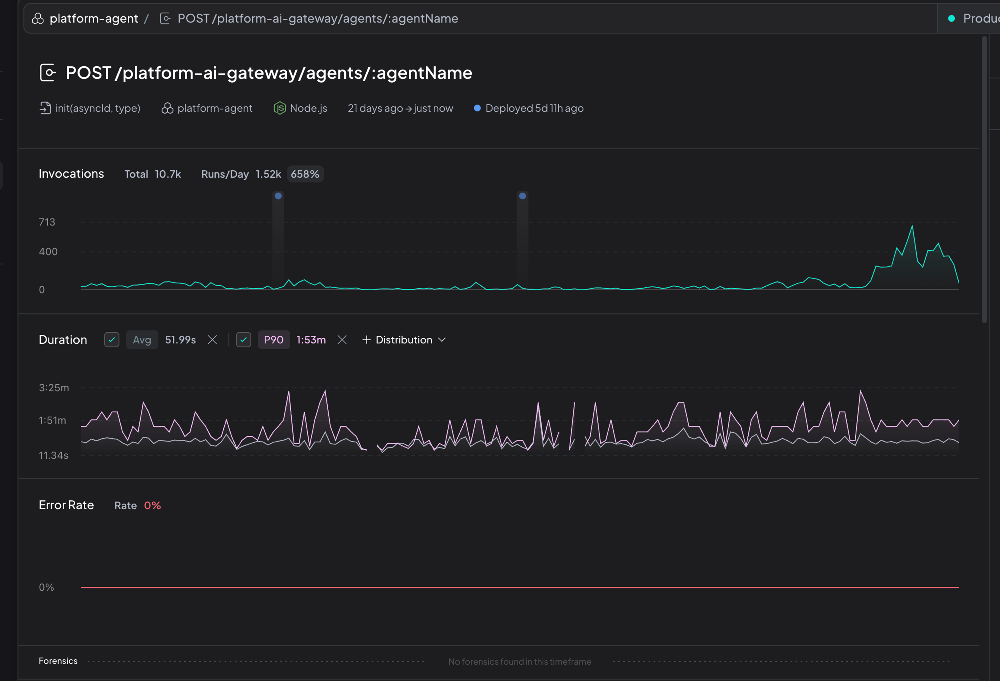
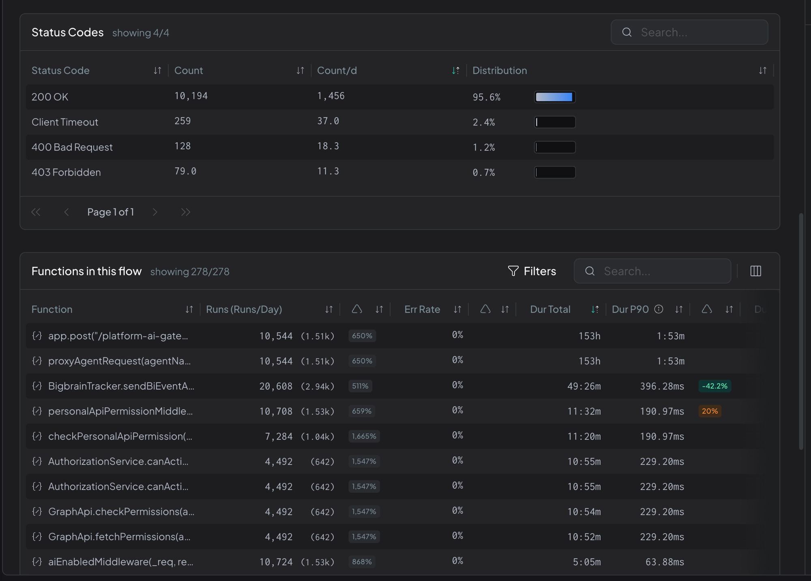
Function Deep Dive
Call graph + invocations + duration — per function, in production.
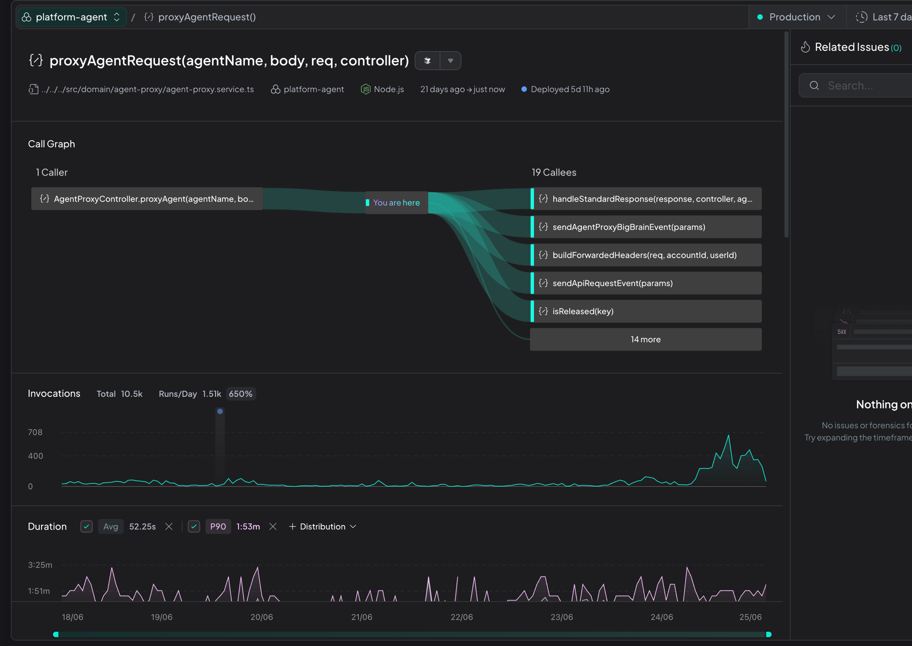
Success Stories
Real teams at monday.com already benefiting.
apps-backend: Crisis Prevented
Hud surfaced a critical performance issue before it reached production.
What happened
- Event loop blocked (~15s lag)
- All responses timing out
- Pod CPU saturated at 98%
- Pods restarting continuously
Hud's role
Hud proactively detected and surfaced the issue — the team didn't find it from an alert. Root cause identified in minutes.
The Impact
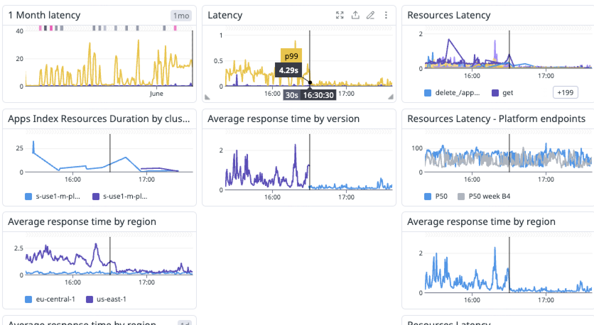
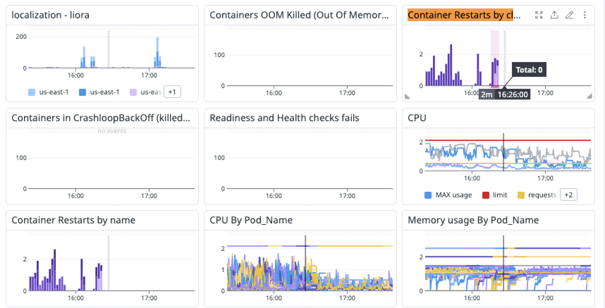
Prompt-to-Board
Error rate from 7% to 0.7%
PTB Error Rate: 90% Reduction
suggestAndCreateBoardFromPrompt() — core AI board creation flow.
- Was failing 7.1% of the time (218 errors/week)
- Identified the exact error flow in minutes
- Pinpointed the failing function in the chain
- Team applied targeted fix — no guesswork
Error Rate: 7.1% → 0.7%
Sustained improvement over time.
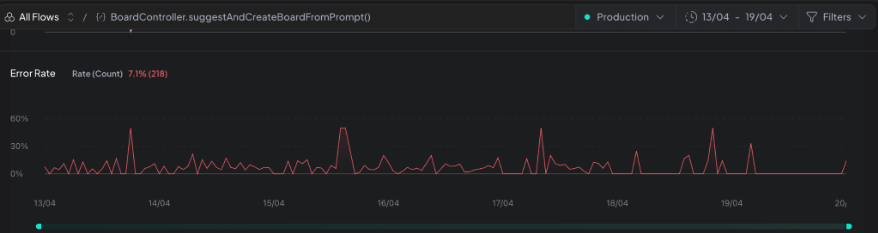
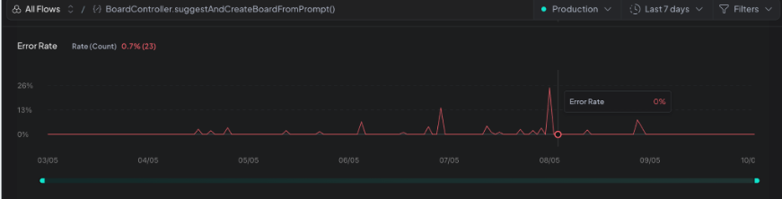
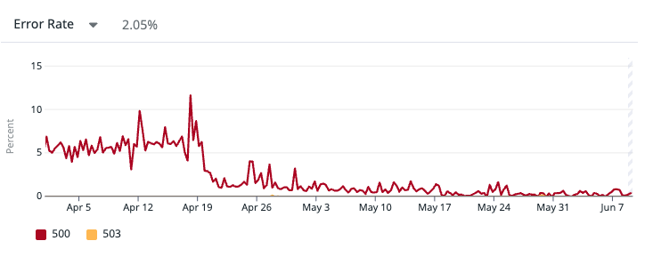
Queue Degradation
Detected 14 minutes after deployment — before users noticed.
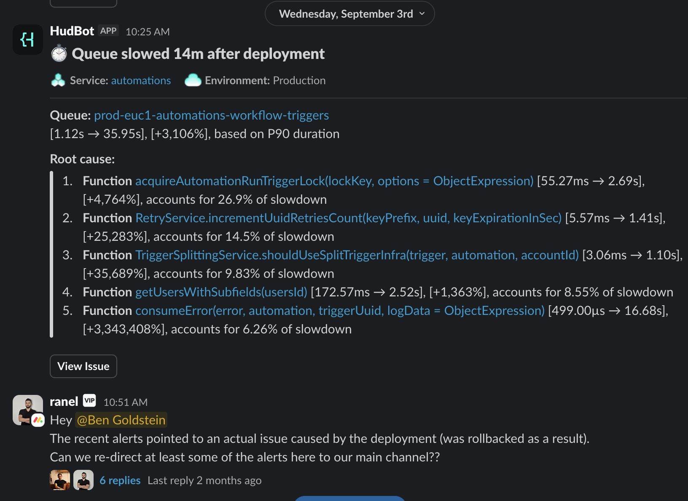
What happened
Hud detected a massive queue degradation just 14 min post-deploy. Root cause shown immediately: specific functions responsible for the slowdown.
Redlock Misuse
Ranel found a lock acquisition bug causing 30s+ delays.
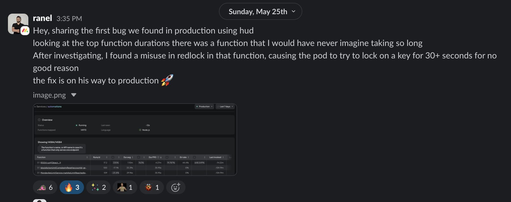
Error with Root Cause
HudBot alerts with the exact function that threw the exception.
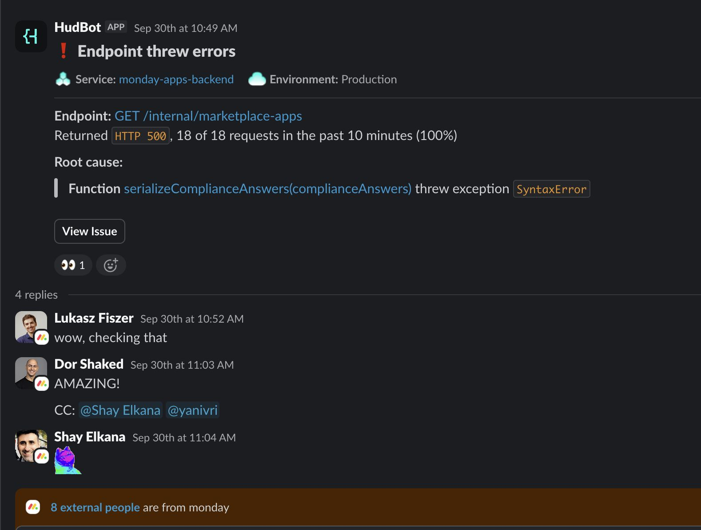
No log digging needed
The alert itself contains the root cause: which function, which exception, which endpoint.
Call Graph Visualization
Amit used Hud MCP to generate service call graphs for design reviews.
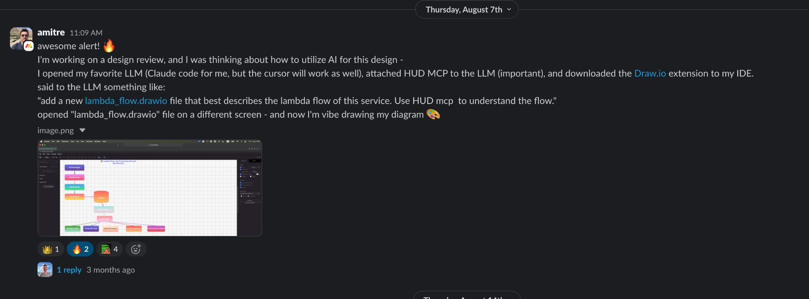
Dead Code Detection
Identify functions with 0 invocations in production — safe to remove.
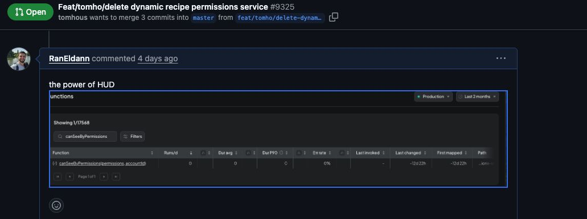
Confident refactoring
Backed by production data. No guessing — if it has zero calls, it's safe to delete.
The Bottom Line
Time-to-Insight
What Hud adds on top of existing tools.
| Use Case | DD / Coralogix alone | With Hud |
|---|---|---|
| Error root cause | Service-level alerts + MCP log queries | Function-level in minutes |
| Performance bottleneck | Traces (expensive, manual correlation) | Immediate, per function |
| CPU spike investigation | Dashboard + pod-level metrics | Hud MCP question |
| Post-deploy regression | Monitor thresholds (reactive) | Proactive detection |
| Dead code identification | Not possible | Production-proven data |
Business Impact Summary
Quantified value delivered to monday.com.
| Team / Area | Outcome | Business Impact |
|---|---|---|
| apps-backend | 95% latency reduction | Production outage prevented |
| Boards (PTB) | 90% error reduction | AI feature reliability |
| Boards (perf) | Ongoing optimization | Feature velocity maintained |
| Apps (CPU spike) | Instant root cause | Faster incident resolution |
| Automations | Queue degradation caught in 14min | User impact avoided |
| All teams | Investigation: hours → minutes | Engineering productivity |
How Hud Fits Our Stack
Each tool has its layer — together they cover everything.
| Tool | What it does best | Layer |
|---|---|---|
| Datadog | Metrics, APM, alerting, dashboards | Service-level |
| Coralogix | Log aggregation, querying, alerting | Log-level |
| DD/Coralogix MCPs | AI-assisted querying of logs + metrics | Service-level (via AI) |
| Hud | Function-level profiling, forensics, call graphs | Function-level |
DD/Coralogix detect. Hud pinpoints. Together: alert → root cause → fix, automatically.
28 Services Instrumented
Growing adoption across R&D.
platform-api-router
board-app
ai-agent
data-validations
events-api
ai-app-builder
monday-apps-backend
sphera
automations
apps-edge
marketing-channels
lite-builder
infra-ops
platform-agent
monday-agents
board-agents
agent-management
hierarchy
ai-scorecards
mndy-code
objects
ai-incident-insights
data-migration
kafka-sdk-switchover-test
boards-ai-blocks
skills
rm-events
+ more coming
Integration & Control
Full control via feature flags — per service, per region, per environment.
What we built
- Feature flags — per service, region, environment
- Smooth release — gradual rollout
- Kill switch — instant disable, no deploy
- Forensics control — independent toggle
Operational safety
- No impact on service SLAs
- Smart sampling, configurable overhead
- Per-region control (us-east, eu-central)
- Per-service without affecting others
What's Next
Expanding depth and automation.
Self-heal via GitHub Actions
Code access approved — auto-remediation coming. From detection to deployed fix, no human in the loop.
Canary Integration
Hud as data source for canary agents — auto-rollback on regression. Coverage verification built-in.
PR Risk Analysis
Surface production risk directly in PR reviews. Hot path detection before merge.
More Services
Continuing rollout across R&D. Teams requesting onboarding after seeing peer results.
From reactive debugging → proactive intelligence → autonomous remediation.
Hud at monday.com
Proven value. Real results. Growing adoption.